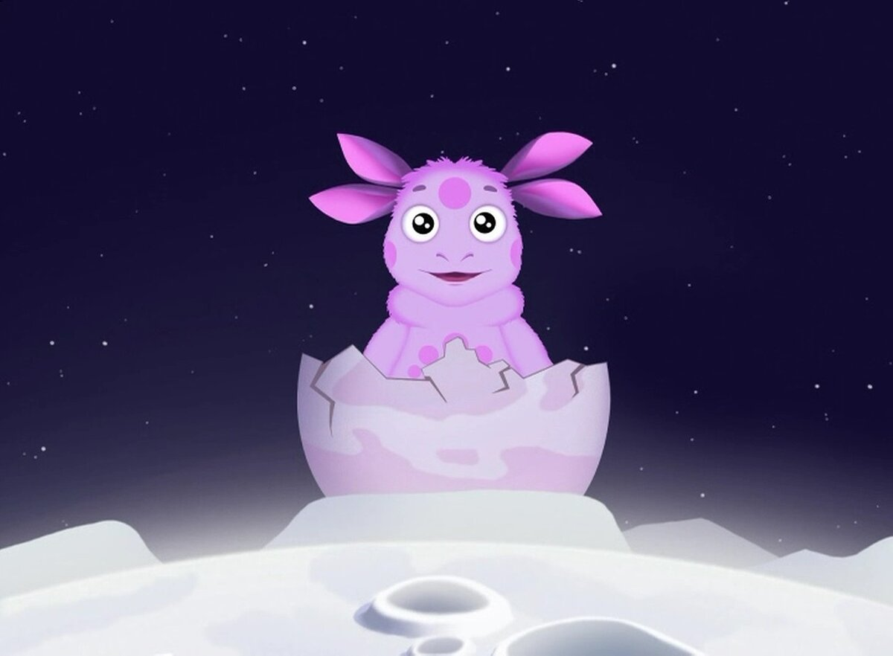

«Лунтик и его друзья»
История создания
Идея мультсериала принадлежала директору студии «Мельница» Александру Боярскому и возникла приблизительно в 2004 году. Первоначально над сериалом работали только Александр Боярский, режиссёр Константин Бронзит и продюсер Сергей Сельянов. Далее к работе присоединилась сценарист (в прошлом известная как детская писательница) Сарра Ансон (настоящее имя — Анна Саранцева). Графический дизайн персонажей, включая главного героя Лунтика, нарисовала Дарина Шмидт.
Генеральному директору телеканала «Россия-1» Антону Златопольскому понравилась концепция проекта и он заказал для передачи «Спокойной ночи, малыши!» производство новых серий сериала «Приключения Лунтика и его друзей».
Генеральному директору телеканала «Россия-1» Антону Златопольскому понравилась концепция проекта и он заказал для передачи «Спокойной ночи, малыши!» производство новых серий сериала «Приключения Лунтика и его друзей».
Генеральному директору телеканала «Россия-1» Антону Златопольскому понравилась концепция проекта и он заказал для передачи «Спокойной ночи, малыши!» производство новых серий сериала «Приключения Лунтика и его друзей».
В 2011 году производство мультсериала было приостановлено в связи с началом работы над новым проектом студии «Мельница» — мультсериалом «Барбоскины». Спустя полтора года производство возобновилось, и к маю 2013 года было создано 439 серий.